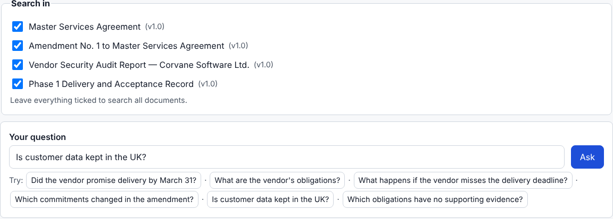
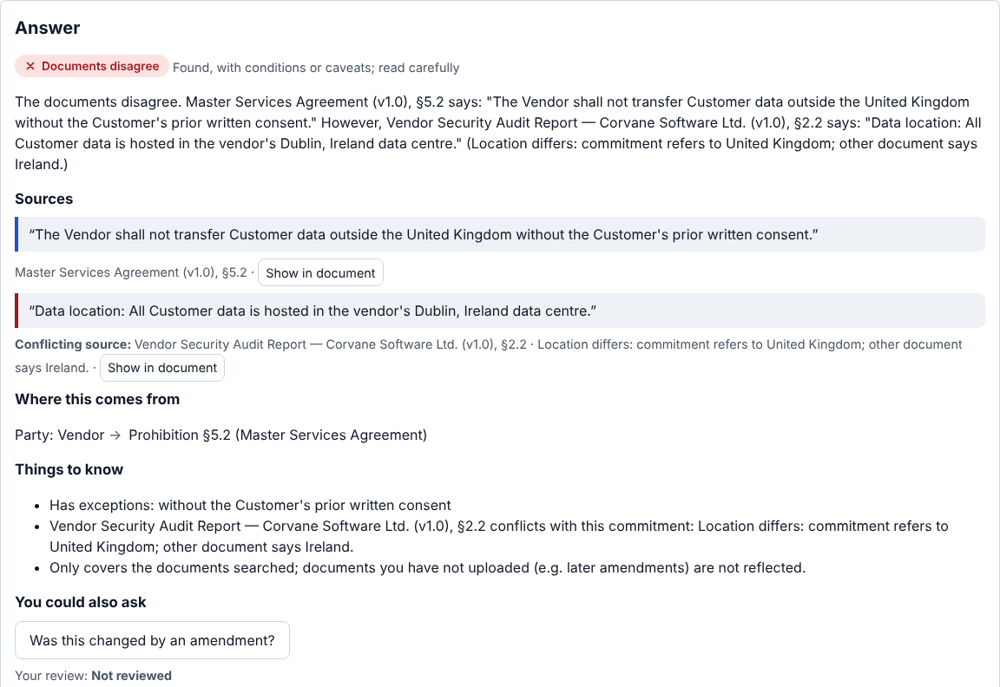

Questions across every document
Answers cover only the documents you ticked.

Runs on your computer and answers only with quotes it has verified.

With no supporting text, the answer is “I could not find support for this in the uploaded documents.”
Obligations, deadlines and conditions, each tied to the exact characters it came from.

Answers lead with the wording in force. When documents disagree, you see both quotes.

Contract against amendment, audit report or delivery record.
$ claimtrace verify <contract> <audit report>
Answers cover only the documents you ticked.

Sends nothing out by default, and a test enforces it. A hosted model sees only documents you approve.
Exports Markdown, JSON, print-ready HTML and a deadline CSV.
claimtrace ingest examples/documents/msa-v1.md
claimtrace ingest examples/documents/amendment-1.md
claimtrace ask "How many days does the customer have to pay invoices?"
Scored on 46 sealed cases nobody opened before the code was frozen.
| Measure | ClaimTrace | Keyword floor |
|---|---|---|
| Hallucination rate, lower is better | 0.00 | 0.50 |
| False all-clear rate, lower is better | 0.03 | 0.29 |
| Contradictions, precision and recall | 0.82 / 0.64 | 0.00 recall |
| Consistency checks | 0.81 | 0.76 |
| Amendment verification | 0.61 | 0.00 |
| Amendment effect | 0.50 | not scored |
Amendments scored 0.89 in development and 0.61 here. Check amendments yourself.
On consistency, a constant “consistent” guess does as well. All cases are synthetic.
Python 3.11+ and Node 20+, or Docker Compose. Then click Load sample documents.
git clone https://github.com/glowstonesq1/claimtrace
cd claimtrace
make dev
make serve # http://127.0.0.1:8000
# or
docker compose up --build